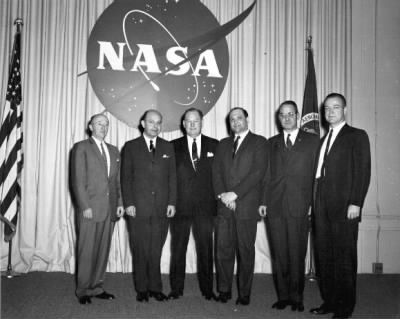
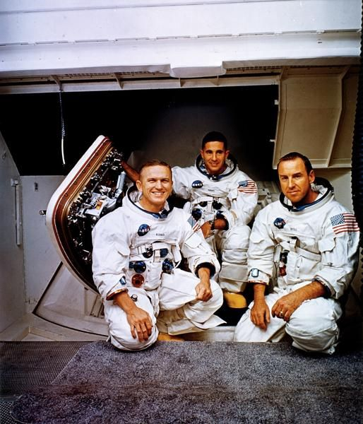
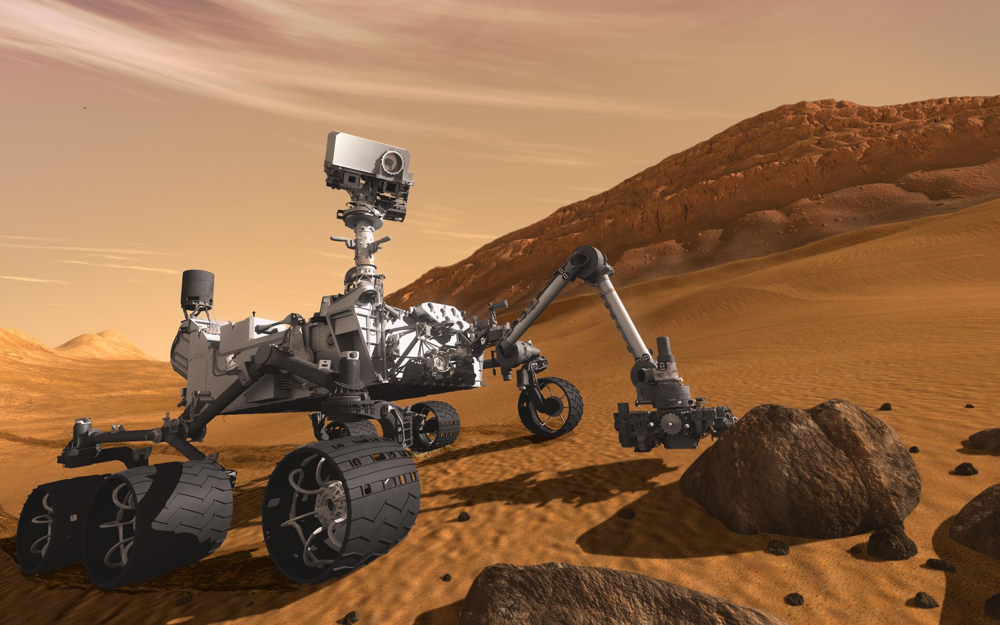
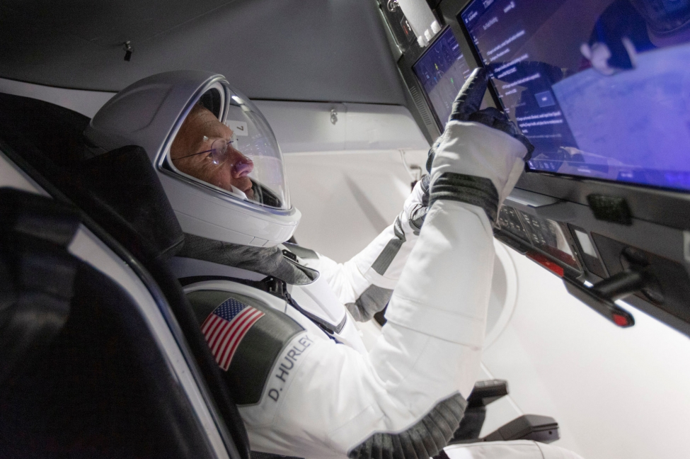

4 October
Sputnik 1 becomes the first human-made object to orbit the Earth and triggers the frenetic ‘space race’ between the Soviet Union and the USA.


This Page will explore the timeline of how mankind first discover a world beyound their atmosphere, and the process of how they build themselves up from build rocket ships to send astronauts into space and now maybe even imigrate onto another planet later in the future.
Sputnik 1 becomes the first human-made object to orbit the Earth and triggers the frenetic ‘space race’ between the Soviet Union and the USA.
Sputnik 2 carries the dog Laika, who becomes the first living animal to travel into space. (She dies within seven hours of launch.)
Explorer 1 lifts off from Cape Canaveral Air Force Station, Florida, to become the first US artificial Earth satellite. NASA is founded in October of this year.
President Kennedy declares the US space objective to put a man on the moon and return them safely by the end of the decade.
Cosmonaut Valentina Tereshkova, the first woman in space, completes 48 orbits.

First manned spacecraft to orbit moon, Apollo 8, comes within 112km of lunar surface.
Apollo 17 mission was the longest stay of man on the moon 74 hours, 59 minutes by astronauts Eugene Cernan and Harrison Schmitt.
NASA's Curiosity rover successfully lands on Mars. It is the largest and most advanced rover ever to land on the red planet.
SpaceX makes history as the first private company to launch astronauts into space. The Crew Demo 2 test flight successfully launches two astronauts into orbit on a mission to the International Space Station (ISS).
It is through mankind's sacrifice and many amount of missions taken into space were we able to push our limits of making the impossible possible. This helped breakthrough the mystery of the universe and capture of the greatest historical event in human history. Supporting mankind in finding habitable places, understanding the nature of the universe or even later on in the future finding biological species with intelligence.
Info


copyright © Reserved. All content and images were used for educational purposes. MMCC2041 History Space 2020.